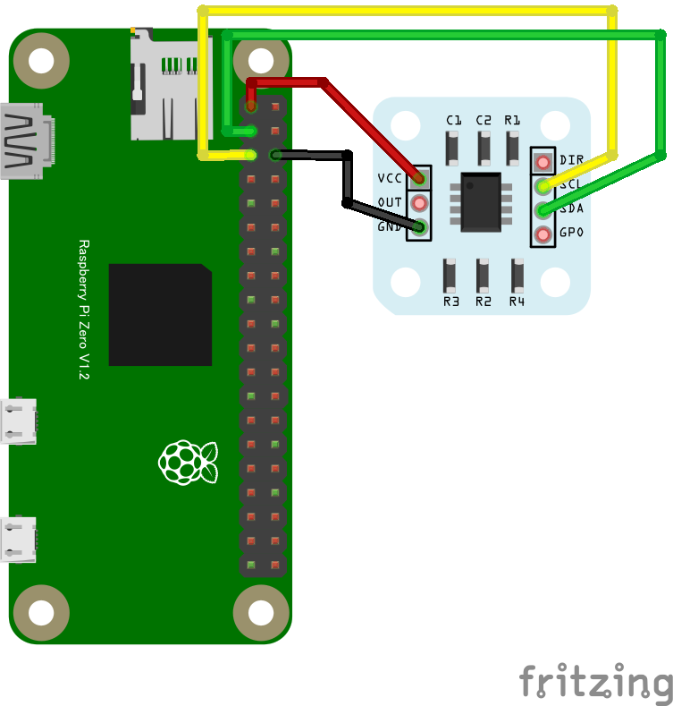

// AS5600(磁気式角度センサ)を使う
import { requestI2CAccess } from "./node_modules/node-web-i2c/index.js";
import AS5600 from "./as5600.js";
const sleep = msec => new Promise(resolve => setTimeout(resolve, msec));
main();
var as5600;
async function main() {
const i2cAccess = await requestI2CAccess();
const port = i2cAccess.ports.get(1);
as5600 = new AS5600(port);
await as5600.init();
var stat = await as5600.getStatus();
console.log("stat:" , stat);
startMeasurement();
}
async function startMeasurement() {
for (; ;) {
var rawAngle = await as5600.getAngle();
console.log("rawA:",rawAngle);
await sleep(1000);
}
}as5600.js, main.js 両方とも myApp ディレクトリ直下に置く